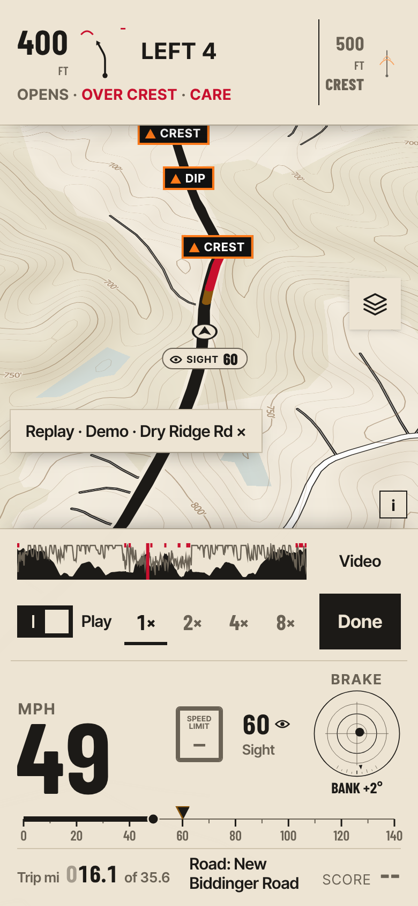
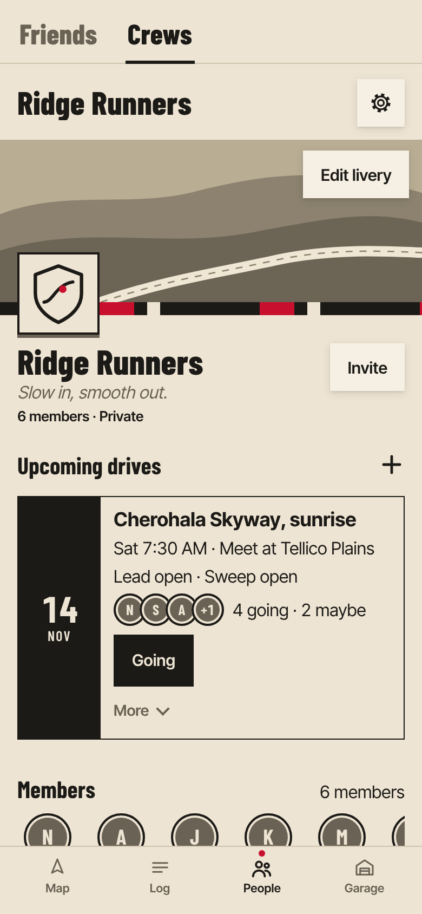

Vetta
VettaA co-driver for the long way home.
Vetta reads the road ahead out loud, finds the twisty roads near you, and scores how smoothly you drove them: how well you used each corner's grip, never your top speed.
Open the app in your browser
Watch a replay
On iPhone: a TestFlight beta for now, ahead of the App Store.


Four promises
No top speedsNothing records or shows how fast anyone went flat out. A time counts on a road you drove clean, with its Score beside it, and a board has only the drivers who ran its road.
Shared with your peopleYour Scores and times go to your friends and private crews, and you can switch that off for any of them. Your drives themselves stay on your phone, and privacy zones keep home and work out of everything.
Unknown stays unknownWhen the app doesn't know, it shows
--, never a guess dressed up as a measurement.Free to driveNo ads, no personal data sold. Driving, your drives and your exports are always free.
What it does
- Pace notes, spoken in plain words or rally notes, timed to your speed so you hear them at the entry, not the apex. The voice works with no signal.
- Directions in the same voice, never on top of a corner call.
- Find the good roads: loops of the length you want, or the most fun way to a destination. More hairpins or more sweepers, your call.
- A Vetta Score for every drive, corner by corner, and a live delta against your best on the stages you mark.
- Drive together: convoys, crew drives with a convoy on the day, hazard reports for the drivers behind you.
- A crash check that asks if you're OK after a hard impact. A backup to your phone's own, not a replacement.
Always drive within the law and the conditions. Vetta is not a racing app.